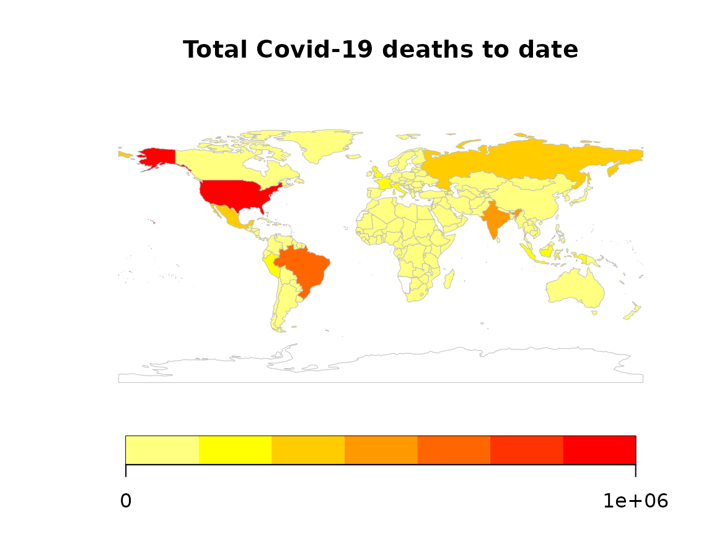

Quick start to covidregionaldata
covidregionaldata is designed to extract national and subnational Covid-19 data from publicly available sources, both daily and aggregated over time.
For example, we could:
- Get the Covid-19 cases and deaths for all countries for each day since reporting began.
- Get the total Covid-19 cases and deaths for all countries up to today.
- Get the number of new cases for each state in the United States over time.
- Get the total number of deaths for all local authorities in the United Kingdom.
We will demonstrate some of these examples below, as well as some useful data manipulation and visualisation.
Retrieving national cases and deaths over time
Let’s say that we want to see the evolution of the pandemic over time in all countries. To do this, we need to get the number of cases (positive test results) and deaths for each country and date since the pandemic started. Firstly load covidregionaldata, then call get_national_data():
library(covidregionaldata)
all_countries <- get_national_data()
#> Downloading data from https://covid19.who.int/WHO-COVID-19-global-data.csv
#> Rows: 181068 Columns: 8
#> ── Column specification ────────────────────────────────────────────────────────
#> Delimiter: ","
#> chr (3): Country_code, Country, WHO_region
#> dbl (4): New_cases, Cumulative_cases, New_deaths, Cumulative_deaths
#> date (1): Date_reported
#>
#> ℹ Use `spec()` to retrieve the full column specification for this data.
#> ℹ Specify the column types or set `show_col_types = FALSE` to quiet this message.
#> Cleaning data
#>
#> Processing dataWe can take a look at this data by printing it to the console:
all_countries
#> # A tibble: 181,068 × 15
#> date un_region who_region country iso_code cases_new cases_total
#> <date> <chr> <chr> <chr> <chr> <dbl> <dbl>
#> 1 2020-01-03 Asia EMRO Afghanistan AF 0 0
#> 2 2020-01-03 Europe EURO Albania AL 0 0
#> 3 2020-01-03 Africa AFRO Algeria DZ 0 0
#> 4 2020-01-03 Oceania WPRO American Samoa AS 0 0
#> 5 2020-01-03 Europe EURO Andorra AD 0 0
#> 6 2020-01-03 Africa AFRO Angola AO 0 0
#> 7 2020-01-03 Americas AMRO Anguilla AI 0 0
#> 8 2020-01-03 Americas AMRO Antigua & Bar… AG 0 0
#> 9 2020-01-03 Americas AMRO Argentina AR 0 0
#> 10 2020-01-03 Asia EURO Armenia AM 0 0
#> # … with 181,058 more rows, and 8 more variables: deaths_new <dbl>,
#> # deaths_total <dbl>, recovered_new <dbl>, recovered_total <dbl>,
#> # hosp_new <dbl>, hosp_total <dbl>, tested_new <dbl>, tested_total <dbl>We can see that this provides information about the number of cases and deaths for each country over time. As a tibble is returned, we can easily manipulate and plot this using tidyverse packages. For example, we can plot the total deaths in Italy over time.
library(dplyr)
library(ggplot2)
all_countries %>%
filter(country == "Italy") %>%
ggplot() +
aes(x = date, y = deaths_total) +
geom_line() +
labs(x = NULL, y = "All reported Covid-19 deaths, Italy") +
theme_minimal()
We could have also filtered by country using get_national_data(countries = "Italy") to achieve the same result.
To plot the evolution of cases for several countries since the start of the pandemic, we could perform something like the following:
all_countries %>%
filter(country %in% c(
"Italy", "United Kingdom", "Spain",
"United States"
)) %>%
ggplot() +
aes(x = date, y = cases_total, colour = country) +
geom_line() +
labs(x = NULL, y = "All reported Covid-19 cases", colour = "Country") +
theme_minimal() +
theme(legend.position = "bottom")
Retrieving total cases and deaths for all countries
Using get_national_data(totals = TRUE) we can obtain total cases and deaths for all nations up to the latest date reported. This is useful to get a snapshot of the current running total for each country. Note how the data is sorted by the total number of cases:
all_countries_totals <- get_national_data(totals = TRUE, verbose = FALSE)
all_countries_totals
#> # A tibble: 236 × 7
#> country iso_code cases_total deaths_total recovered_total hosp_total
#> <chr> <chr> <dbl> <dbl> <dbl> <dbl>
#> 1 United States US 75087972 888113 0 0
#> 2 India IN 41952717 500055 0 0
#> 3 Brazil BR 25793685 628960 0 0
#> 4 France FR 19596336 129042 0 0
#> 5 United Kingdom GB 17607836 157730 0 0
#> 6 Russia RU 12452765 334039 0 0
#> 7 Turkey TR 11939804 88064 0 0
#> 8 Italy IT 11348701 147765 0 0
#> 9 Germany DE 10671602 118504 0 0
#> 10 Spain ES 10199716 94040 0 0
#> # … with 226 more rows, and 1 more variable: tested_total <dbl>Retrieving subnational region data
As well as national data, we can also retrieve subnational data, such as states and counties in the US, or regions and local authorities in the UK, and perform similar manipulations. See the README for a current list of countries with subnational data.
To do this, we use get_regional_data() (we could also use the underlying method as follows us <- USA$new(get = TRUE); us$return()). We’ll get the state-level data for the United States over time:
usa_states <- get_regional_data(country = "USA")
#> Downloading data from https://raw.githubusercontent.com/nytimes/covid-19-data/master/us-states.csv
#> Rows: 38870 Columns: 5
#> ── Column specification ────────────────────────────────────────────────────────
#> Delimiter: ","
#> chr (2): state, fips
#> dbl (2): cases, deaths
#> date (1): date
#>
#> ℹ Use `spec()` to retrieve the full column specification for this data.
#> ℹ Specify the column types or set `show_col_types = FALSE` to quiet this message.
#> Cleaning data
#>
#> Processing dataThis retrieves the new and total cases and deaths for all states over time in the United States. Note that the country argument to the get_regional_data() function must be specified. Let’s plot out how the number of cases has evolved for a selection of states:
usa_states %>%
filter(state %in% c("New York", "Texas", "Florida")) %>%
ggplot() +
aes(x = date, y = cases_total, colour = state) +
geom_line() +
labs(x = NULL, y = "All reported Covid-19 cases", colour = "U.S. state") +
theme_minimal() +
theme(legend.position = "bottom") The totals argument can also be used in get_regional_data to return the cumulative number of cases or deaths over time.
usa_states_totals <- get_regional_data(
country = "USA", totals = TRUE,
verbose = FALSE
)Let’s plot the total deaths for each state, ordered by total deaths:
usa_states_totals %>%
ggplot() +
aes(x = reorder(state, -deaths_total), y = deaths_total) +
geom_bar(stat = "identity") +
labs(x = "U.S. states", y = "All reported Covid-19 deaths") +
theme_minimal() +
theme(
axis.text.x = element_text(angle = 90),
axis.title.y = element_text(hjust = 1),
legend.position = "bottom"
)
Most countries have a hierarchy of political subdivisions. Where data are available, use the level = "2" argument to get_regional_data. We can dig down further into each US state by looking at data by county:
usa_counties <- get_regional_data(country = "USA", level = "2", verbose = FALSE)This returns data for each county on each day of reported data. As there are more than 3,000 counties in the US, with some reporting data since the 21st January, this makes for a very large download.
The same method will work for different countries where data are available, returning relevant sub-national units for each country. For example, in Germany data are available for Bundesland (federated state) and Kreise (district) areas.
Additional subnational data are supported via the JHU() and Google() classes. Use the available_regions() method once these data have been downloaded and cleaned (see their examples) for subnational data they internally support.
Mapping data
We provide the relevant national and subnational ISO codes, or local alternatives, to enable mapping. We can map Covid-19 data at national or subnational level, using any standard shapefile. In R, the rnaturalearth package already provides shapefiles for all country borders, and the largest (administrative level 1) subnational units for most countries.
For simplicity here we will use the rworldmap package, which uses data from rnaturalearth for national country borders and inbuilt mapping. We can join Covid-19 data to the map using the iso_code.
# Get latest worldwide WHO data
map_data <- get_national_data(totals = TRUE, verbose = FALSE) %>%
rworldmap::joinCountryData2Map(
joinCode = "ISO2",
nameJoinColumn = "iso_code"
)
#> 225 codes from your data successfully matched countries in the map
#> 11 codes from your data failed to match with a country code in the map
#> 16 codes from the map weren't represented in your data
# Produce map
rworldmap::mapCountryData(map_data,
nameColumnToPlot = "deaths_total",
catMethod = "fixedWidth",
mapTitle = "Total Covid-19 deaths to date",
addLegend = TRUE
)